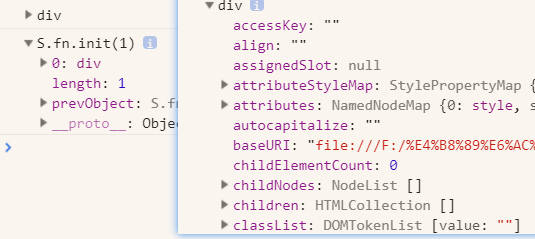
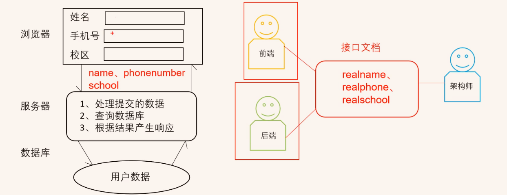
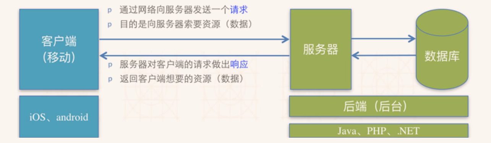

1.使用aos要初始化；
0%
30-计算机基础
30-英语单词
1.accepted
- 2020/10/14 01:19:15 127.0.0.1:59001 accepted //www.google.com:443 [proxy11001]
34-jqery
1. jQuery 入门
能够说出什么是 jQuery
能够说出 jQuery 的优点
能够简单使用 jQuery
能够说出 DOM 对象和 jQuery 对象的区别
jQuery 概述
jQuery 的基本使用
1.1 jQuery 概述
1.仓库： 可以把很多东西放到这个仓库里面。找东西只需要到仓库里面查找到就可以了。
2.JavaScript库：即 library，是一个封装好的特定的集合（方法和函数）。从封装一大堆函数的角度理解库，就是在这个库中，封装了很多预先定义好的函数在里面，比如动画animate、hide、show，比如获取元素等。
简单理解： 就是一个JS 文件，里面对我们原生js代码进行了封装，存放到里面。这样我们可以快速高效的使用这些封装好的功能了。
比如 jQuery，就是为了快速方便的操作DOM，里面基本都是函数（方法）。
3.常见的JavaScript 库
jQuery
Prototype
YUI
Dojo
Ext JS
移动端的zepto
4.这些库都是对原生 JavaScript 的封装，内部都是用 JavaScript 实现的，我们主要学习的是 jQuery。
1.2 jQuery 的概念
1.jQuery 是一个快速、简洁的 JavaScript 库，其设计的宗旨是“write Less，Do More”，即倡导写更少的代码，做更多的事情。
2.j 就是 JavaScript； Query 查询； 意思就是查询js，把js中的DOM操作做了封装，我们可以快速的查询使用里面的功能。
3.jQuery 封装了 JavaScript 常用的功能代码，优化了 DOM 操作、事件处理、动画设计和 Ajax 交互。
学习jQuery本质： 就是学习调用这些函数（方法）。
jQuery 出现的目的是加快前端人员的开发速度，我们可以非常方便的调用和使用它，从而提高开发效率。
2. 优点
轻量级。核心文件才几十kb，不会影响页面加载速度
跨浏览器兼容。基本兼容了现在主流的浏览器
链式编程、隐式迭代
对事件、样式、动画支持，大大简化了DOM操作
支持插件扩展开发。有着丰富的第三方的插件，例如：树形菜单、日期控件、轮播图等
免费、开源
1.3 jQuery 的基本使用
1. jQuery 的下载
1.官网地址： https://jquery.com/
2.版本：
1x ：兼容 IE 678 等低版本浏览器， 官网不再更新
2x ：不兼容 IE 678 等低版本浏览器， 官网不再更新
3x ：不兼容 IE 678 等低版本浏览器， 是官方主要更新维护的版本
3.各个版本的下载：https://code.jquery.com/
2. 使用步骤
1.直接复制粘贴一个新文件；
https://www.bilibili.com/video/BV1a4411w7Gx?p=4&spm_id_from=pageDriver
3. 入口函数
1 | $(function () { |
1 | $(document).ready(function(){ |
1.等着 DOM 结构渲染完毕即可执行内部代码，不必等到所有外部资源加载完成，jQuery 帮我们完成了封装。
2.相当于原生 js 中的 DOMContentLoaded。
3.不同于原生 js 中的 load 事件是等页面文档、外部的 js 文件、css文件、图片加载完毕才执行内部代码。
4.更推荐使用第一种方式。
4. jQuery 的顶级对象 $
1.$ 是 jQuery 的别称，在代码中可以使用 jQuery 代替 $，但一般为了方便，通常都直接使用 $ 。
2.$ 是jQuery 的顶级对象， 相当于原生JavaScript中的 window。把元素利用$包装成jQuery对象，就可以调用jQuery 的方法。
5. jQuery 对象和 DOM 对象
1.用原生 JS 获取来的对象就是 DOM 对象。
1 | var myDiv = document.querySelector('div'); //myDiv 是DOM对象 |
2.jQuery 方法获取的元素就是 jQuery 对象。
1 | $('div'); // $('div')是一个jquery对象 |
3.jQuery 对象本质是： 利用$对DOM 对象包装后产生的对象（伪数组形式存储）。
- div是原生
- S.fn.init(1)是jquery

==注意：==
只有 jQuery 对象才能使用 jQuery 方法，DOM 对象则使用原生的 JavaScirpt 方法。
2. 相互转换
https://www.bilibili.com/video/BV1a4411w7Gx?p=7&spm_id_from=pageDriver
1.DOM 对象与 jQuery 对象之间是可以相互转换的。
2.因为原生js 比 jQuery 更大，原生的一些属性和方法 jQuery没有给我们封装.,要想使用这些属性和方法需要把
jQuery对象转换为DOM对象才能使用。
3.DOM 对象转换为 jQuery 对象： $(DOM对象)
$('div')
4.jQuery 对象转换为 DOM 对象（两种方式）
$('div') [index] index 是索引号
$('div') .get(index) index 是索引号
2. jquery常用API
- 能够写出常用的 jQuery 选择器
能够操作 jQuery 样式
能够写出常用的 jQuery 动画
能够操作 jQuery 属性
能够操作 jQuery 元素
能够操作 jQuery 元素尺寸、位置 - jQuery 选择器
jQuery 样式操作
jQuery 效果
jQuery 属性操作
jQuery 文本属性值
jQuery 元素操作
jQuery 尺寸、位置操作
2.1 jQuery 选择器
1. 基础选择器
1.原生 JS 获取元素方式很多，很杂，而且兼容性情况不一致，因此 jQuery 给我们做了封装，使获取元素统一标准。
$(“选择器”) // 里面选择器直接写 CSS 选择器即可，但是要加引号

2. jQuery 层级选择器
1.
| 名称 | 用法 | 描述 |
|---|---|---|
| 子代选择器 | $(“ul>li”); | 使用>号，获取下一层级的元素。不会获取更下一层的 |
| 后代选择器 | $(“ul li”); | 使用空格，代表后代选择器，获取ul下所以li元素。 |
2.jQuery 设置样式
$('div').css('属性', '值')
3. 隐式迭代（重要）
1.遍历内部 DOM 元素（伪数组形式存储）的过程就叫做隐式迭代。
2.简单理解：给匹配到的所有元素进行循环遍历，执行相应的方法，而不用我们再进行循环，简化我们的操作，方便我们调用。
4. jQuery 筛选选择器
1.

5. jQuery 筛选方法（重点）
1.

重点记住： parent() children() find() siblings() eq()
6. jQuery 里面的排他思想
1.想要多选一的效果，排他思想：当前元素设置样式，其余的兄弟元素清除样式。
1 | $(this).css("color","red"); |
x. 视频看到
1.https://www.bilibili.com/video/BV1a4411w7Gx?p=7&spm_id_from=pageDriver
- 相互转化
35-vue
1.笔记由视频资料而来；
1. VUE基础
1.1 简介
JavaScript框架
简化Dom操作
响应式数据驱动
https://www.bilibili.com/video/BV1HE411e7vY?p=2&spm_id_from=pageDriver
1.2 第一个Vue程序
文档传送门
进入文档，点击起步，查看第一个vue程序的信息；
代码：
1 |
|
<script> var app = new Vue({ el: '#app', data: { message: 'Hello Vue!' } }) </script>写在上面是没用的；2021-3-28 17:51:19
4.过程：
导入==开发版本==的vue.js
创建Vue实例对象，设置==el==属性和==data==属性
使用简洁的==模板语法==把数据渲染到页面上
模板语法就是：
{{ }}；
https://www.bilibili.com/video/BV1HE411e7vY?p=3&spm_id_from=pageDriver
36-接口
https://www.bilibili.com/video/BV1LJ41137b5?p=2&spm_id_from=pageDriver
1. 接口的定义
1.1 现实中的接口
1.定义：程序之间协作索要遵循的一套规范、标准
1.2 优点
1.责任划分清晰
2.缩短研发周期
3.可拓展性强
1.3 API接口
https://www.bilibili.com/video/BV1LJ41137b5?p=4&spm_id_from=pageDriver
1.应用程序编程接口(API: Application Programming Interface,应用程序编程接口) :以HTTP协议形式提供,定义了输入、输出、功能描述的服务。

2.接口文档是规则（自）
2. 接口测试流程
1.接口的功能测试（先要保证接口是正确的）
2.测试接口的数据，传递一些特殊的数据，保证接口没问题
3.自动化测试脚本的编辑
4.接口的性能，压力测试
（我只是想学怎么用接口，怎么就测试了呢？）
3. 网络编程基本概念
1.客户端(Client) :移动应用(IOS,Android,Web等应用)
2.服务器(Server) :为客户端提供服务、提供数据、提供资源等机器
3.请求(Request) :客户端向服务器索取数据的一种行为
4.响应(Response) :服务器对客户端对请求做出的反应,一般指返回数据给客户端

3.2 HTTP协议
1. HTTP协议概念
协议:计算机通信网络中两台计算机之前进行通信所必须共同遵守的规则或规定。
HTTP协议:超文本传输协议,是一种规定了浏览器和服务器之间通信的规则
2. URL
统一资源定位符
概念:互联网上资源的地址、位置。每一个资源都有一个唯一的URL
格式:协议://主机地址/路径
3. GET、POST请求
1.get：
提交的数据显示在地址栏,不安全;提交的数据量有限制;不重要的数据使用GET
- 浏览器不同，数量的限制也不同

2.post：
隐式提交数据,更安全;没有数据量大小的限制;重要数据使用POST

4. 数据传递格式
1.键值对：?xx=11&xx=22
视频里面说，问号后面是 传递的数据，前面是网络地址；
https://www.bilibili.com/video/BV1LJ41137b5?p=9&spm_id_from=pageDriver
01:17
&，是 and
2.JSON数据：
1 | { |
5. 状态码
1.HTTP协议之常见响应状态码
- 状态码由三分数字组成，第一位数字定义了响应类型，有5中可能取值
1xx:指示信息一表示请求已接收,继续处理。
2xx:成功一表示请求已被成功接收、理解、接受。
3xx:重定向-要完成请求必须进行更进一步的操作。
4xx:客户端错误-请求有语法错误或请求无法实现。
5xx:服务器端错误一服务器未能实现合法的请求。
2.
6. restful风格
1.按照一定的规则写出的易读、易懂的api文档；目的是让前端、后端、测试三方在工作的时候有据可循，提升开发和测试的效率(非强制要求,软要求)。
- 不是必须这么风格；
2.增删改查四大功能的语法风格：
查
方法：get
响应码：200 + 查询的数据
响应码不止给个码，还把查询的数据也给出来，所以需要get，因为能看到
增
- 方法：post
- 响应码：201 + 新增的数据
改
- 方法：put[^2]
- 响应码：200或201 + 修改后的数据
删
- 方法：delete[^1]
- 响应码：204 + 无；
X. 题注
[^1]:delete 英 [dɪˈliːt] 美 [dɪˈliːt]
v.删去;删除
[^2]:put 英 [pʊt] 美 [pʊt]
v.放;安置;猛推;用力插入;将…送往;使…前往
本周工作汇报
1.完成宁夏会计手机端专题
- PC端；
2.完成宁夏酒店管理PC端专题
- 和手机端；
3.编写宁夏电气运行与控制专题PC与手机端
下周工作
1.完成宁夏电气运行与控制专题PC与手机端
2.学习
37-数据流图
1.
https://blog.csdn.net/T_I_A_N_/article/details/86016324
2021-4-5 15:18:24
2.顶层数据流图
https://zhidao.baidu.com/question/537269670.html
- 2021-4-5 15:20:49
3.
38-工作
1. 数据传递
1.后台官网：http://base.hope55.com/Home/Index#
1.1 先配置企业部门的id；
0.
1 | var api = { |
1.找学校；
1.在最上面的部门管理找

2.然后在下面找到对应的学校；
2.1 鼠标放在企业信息上面，可以在左下角看到企业id
1.2 同理，找到部门的id；
- 1.比如我这里写的是这个学校的院团委；
- 2.鼠标放在栏目信息，这些地方，部门id也不会变；
1.2 应该就是上传数据了吧
1. 导航栏
1.首页导航栏，模板：
1.1 位置：js\public.js
1.2 代码：
1 | // 导航栏遍历渲染 |
1.
$("#navBox").html(_html);这个是链接id的；1.1 ul那边；
1
2
3
4<div class="nav">
<ul id="navBox">
</ul>
</div>
1.3 数据哪来的？
在栏目信息里面；

- 1.下面的部门简介，团情快讯这些，就是导航栏的数据；
- 2.首页的话，自己手动加；
1.1 跳转页面
1.导航栏渲染出来了，但页面能跳转过去吗？不能；
- 1.是空白的；
- 2.怎么设置这个跳转呢？
2.看路径：http://127.0.0.1:5500/list.html?HType=2&CId=3219
2.1 list.html；
1.需要创建list.html文件，这个路径写死的，在前端用的字符串，不是后端路由；2021-5-19 11:46:28
2.然后在郭老师那边，没怎么找到list；
3.老李这：
1
2
3
4
5
6
7
8
9
10
11
12
13
14
15
16
17
18
19
20```
### 2. 页面盒子传入数据
1.例如：

2.怎样能传入进去？
2.1 首先找到拼接的地方。但先不问什么能拼；别人的代码，我看了半天没看懂，本来自己也还是小白；
+ 1.在base.js:537的地方；//获取文件信息集合
```js
GetNewsInfoByCid: function (strHtml, Cid, IDname, needPhoto, CssClass, PageIndex, SearchWord, PageSize, DefaultImg, descNum) {1.1 html字符串，Cid信息源id，装html的盒子的id，
1.2 needPhoto，
2.2 可以先打印一下，应该要打印一下，看一下里面的数据；
1 | var a1 = Base.GetFilesInfoByCid('', 3222, '', '', 1, '', 3); |
- 1.但栏目id(Cid)一定要有，不然看不到啥数据；
2.3 例如：这里院团委的部门新闻，因为没有专门的 部门新闻；我用的 团情快讯
1.代码：
1
2var a1 = Base.GetNewsInfoByCid('', 3218, "", "", "", 1, "", 3);
console.log(a1);2.打印结果：
1
2
3
4
5
6
7
8
9
10
11
12
13
14
15
16
17
18
19
20
21(3) [{…}, {…}, {…}]
0:
Author: "院团委供稿"
Cover: "http://base.hope55.com/gzcjxy/UploadFile/UploadFile_Img/20201106154743e90097b1b6a24ed79fc84c4b37c6b349.jpg"
Describe: "“感恩之路，希望力量”2020年感恩季协调会议为引导学生厚植爱国主义情怀，把坚定理想信念，勇担责任，砥砺前行的精神内涵自觉融入和发展到中国特色社会主义事业、建设社会主义现代化强国、实现中华民族伟大复兴的奋斗之中，推动学院发展。2020年11月2日，贵州财经大学商务学院在博学楼112召开感恩季协调会。..."
FID: 3218
HasPhoto: true
Hot: false
ID: 47621
KeyWords: ""
Press: 199
ShowTime: "2020-11-06T00:00:00"
Source: "新媒体中心"
Title: "感恩季｜贵州财经大学商务学院“感恩之路，希望力量”2020年感恩季协调会议"
Top: false
Url: null
__proto__: Object
1: {ID: 47620, FID: 3218, Title: "凝聚青春力量·畅聊人生展望——我与院长面对面交流会", Author: "院团委供稿", Source: "新媒体中心", …}
2: {ID: 47619, FID: 3218, Title: "为新时代中国特色社会主义新疆建设贡献青春力量", Author: "共青团中央", Source: "共青团中央", …}
length: 3
__proto__: Array(0)3.这样就知道
Model.NewsInfos.Cover那些玩意了；4.但是，这不是马上的，而是先传到函数的形参里面。
3.要知道model后面到底什么？是NewInfos？还是Model.FilesInfo；这个要在Base.js里面看注释；
3.1 banner是
1 | //获取文件信息集合 |
- 为什么？
3.2 是后天那边吗？但只知道后台与前端这里的js联系，只靠Cid；
- 1.郭老师说：这是后台那边有路由处理；
1.3 我已经懵了
1.懵了，真的懵了。累，我好想自己写链接接口。
2.但我不会。唉
3.看来，还是应该继续学习，但是学到前端使用接口读取后端数据的操作，总觉得还有很久。2021-5-19 15:47:49
4.现在只有难受着先用着？？
5.我应该边做，边学啊；怎么一直在弄代码啊；
6.计划，计划吧；2021-5-19 15:49:27
7.要改修模板，定位去掉，要用浮动？定位好像不能自己撑开盒子；
- 1.但浮动好像也不行；看郭老师怎么写的；
8.哦豁，忘记写笔记了，清楚浮动，可以撑开盒子；
9.导航栏飞在上面了，要拿下来；
9.1 查代码：$(".NAA_content").append
- 1.语法：$(selector).append(content)
- 2.效果：append() 方法在被选元素的结尾（仍然在内部）插入指定内容。
9.2 同时找到的在前面插入；
- 1.https://www.w3school.com.cn/jquery/manipulation_prepend.asp
- 2.
$(selector).prepend(content)
10.没找到数据

10.1 同时页面那边也没有，看看后台有没有数据；
10.2 好家伙，后台那边没有数据；
1.4 部门概况
1. 找方法
1.传入特有的内容；
2.查看老李的，用的方法是：Base.GetSinglePageInfoByCid()
3.看看郭老师的：Base.GetSinglePageInfoByCid(Model.SinglePage.Describe, CId, "news");
4.一样的；
5.解析这个方法
5.1 去Base.js看看；
1 | //获取单页信息 |
- 1.看下面的也没看出啥名堂；
- 2.直接用，看能不能实现效果；
5.2 没有数据；
3. 选择base里的方法
1.里面很多方法，怎么选？
2.根据：
根据这里选；
1.5 搜索框
1.搜索框咋个弄？
2.第一步：
1 | $(".searth a").click(function () { |
3.第二补，渲染search.html
3.1 没有渲染，直接建立了一个新的html；
- 1.然后在下面加
1 | <script> |
1.6 下面的二维码
1.怎么弄这个二维码？
1.1 先看老李的；打印不出信息，去后台找找在哪；
2.后台在：对应学习——官网——二维码；
2. 笔记
2.1 $(selector).html()
1.https://www.w3school.com.cn/jquery/manipulation_html.asp
2.html() 方法返回或设置被选元素的内容 (inner HTML)。
如果该方法未设置参数，则返回被选元素的当前内容。
2021-5-19 09:59:14
2.2 分页不变
1.

2.是参数没有设置对；
- 1.之前一直写的1；
- 2.现在写为PageIndex
2.1

2.2 为啥
1 | GetNewsInfoByCid: function (strHtml, Cid, IDname, needPhoto, CssClass, PageIndex, SearchWord, PageSize, DefaultImg, descNum) { |
- 1.从结论做出假设：PageIndex是每页的页码，PageSize每页多少个数据；2021-5-20 13:59:17
2.3 url为null但跳转
1.明明url为空：片段
1 | Source: "新媒体中心" |
2.但仔细想想，这个地方，没办法拿到Url；额，不是。我也不知道为啥拿不到；
3.看代码是怎么给的：
1 | .myReplace(Model.NewsInfos.Url, (Curren.isEmpty(GetData[i].Url) ? "list.html?HType=2&CId=" + GetData[i].FID + "&NId=" + GetData[i].ID : GetData[i].Url)) |
- 1.
GetData[i].Url是否为空，是的话，不是的话。从Base.js得出，这里是同步，返回值GetData在末尾，这里会一直为空； - 2.然后就是拼接出来的
"list.html?HType=2&CId=" + GetData[i].FID + "&NId=" + GetData[i].ID
4.很好，这个是
1 | //获取列表信息集合 |
5.看看其他，是不是这样；
5.1 只有两个地方是；一个是上面的列表信息集合。一个是：
1 | GetInfoBySearch: function (selText, IDname, strHtml, did, pageSize) { |
- 1.通过查找获取信息吗？2021-5-20 14:40:04
2.4 index.js怎么联系的index.html
1.忽然想起这个问题；
2.5 pagesize
1.好像不是一页数据有多少，而是一页遍历了几次；
2.6 被选中-分页
1.郭老师，在JS里面写了相应代码；
2.7 理解导航
1.代码
1 | //导航栏遍历 |
1.1 先去找Base.GetNavColumnsByDid();
39_出租信息
1. 价格
1·.价格构成: 1100房租+170物业费-水电补助50-宽带助50=1170
1.1.水电为商业价格。水: ;电:
1.2 如果是一个人住。-50/月
1.3 如果是对面大学的女侠；-50/月
1.4 如果是二次元兄弟；-50/月
2. 联系
2.微信: a17380114645
3. 我的情况
3.平常下班18点。房子情况如图所示。虽然单间出租,我个人少有而来,一个月可能一次。
来也是放取东西，一般不会过夜。不对，我说这个干嘛？
- 表明你可能会有整租的体验；
如果我长期而来，会通知。水电气也将改为平摊等。
3.1 若要看房,我得赶车来。需要时间。房屋如58同城图所示。
4. 特殊情况
4.有事半路退租，根据情况退还多少押金。封顶一半租金。
5. 你可能需要
1.可能需要长一点的插板。5m？emm
2021-5-23 18:20:03
99-Hello World
Welcome to Hexo! This is your very first post. Check documentation for more info. If you get any problems when using Hexo, you can find the answer in troubleshooting or you can ask me on GitHub.